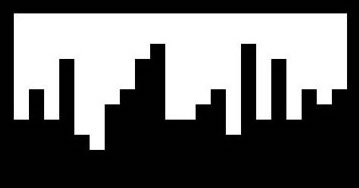

文字情報からのロゴ生成
ABOUT
| 種類 | PC, グラフィック |
|---|---|
| 役割 | コンセプト, デザイン, コーディング |
| 使用言語 | Processing |
| 制作時期 | 2016年7月 |
| 制作人数 | 1人 |

CONCEPT
普段私たちが手で書いている文字は
パソコンの中では数字で処理されています。
その文字が持つ、私たちが普段見ることのない数字を用いて
文字の新しい形を生成しました。
PRODUCT
「MARIKA KIYA」という文字を数字（Unicode）になおし、文字の形を生成しました。

1. モノトーン
重さ をつけました。
手で描くの文字の形から感じる、大きさや太さとは異なる重みです。
重さ をつけました。
手で描くの文字の形から感じる、大きさや太さとは異なる重みです。
2. カラー
色をつけました。
単語・文章を書くとき、1文字1文字の大きさや形に注目することはありますが、色を持たせることはほとんどありません。色をつけることで、文字の新しい見方が生まれました。
色をつけました。
単語・文章を書くとき、1文字1文字の大きさや形に注目することはありますが、色を持たせることはほとんどありません。色をつけることで、文字の新しい見方が生まれました。
3. 交差
動きを持たせました。
普段見る文字は横に列に並べられることが多いです。そんな文字がここでは手を伸ばしているかのような、文字同士が引き寄せあっているような動きを表現しました。
動きを持たせました。
普段見る文字は横に列に並べられることが多いです。そんな文字がここでは手を伸ばしているかのような、文字同士が引き寄せあっているような動きを表現しました。